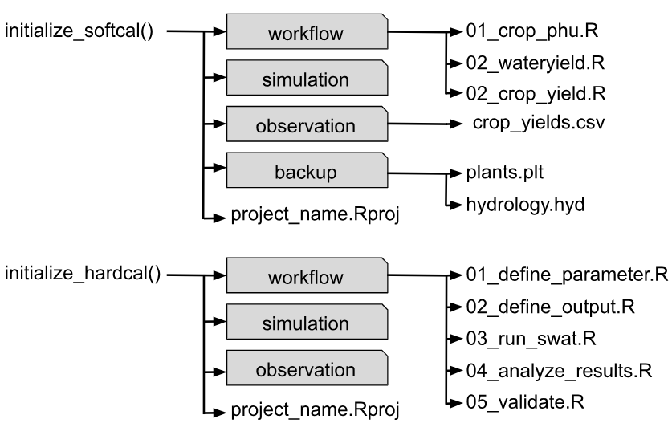

Getting Started
Initialization of Calibration Projects in SWATtunR
Source:vignettes/init.Rmd
init.RmdInitialization
Before beginning calibration with the SWATtunR package, users must establish a calibration project by setting up a well-organized directory containing essential files and folders to support the calibration process. The package offers automated functions to streamline this setup, ensuring all necessary components are included. Additionally, it provides example data and workflow scripts with explanations and examples to help users start efficiently.
The SWATtunR package offers two main functions,
initialize_softcal() and initialize_hardcal(),
requiring a project name, calibration project save path, and SWAT+ model
setup path as inputs. These functions automatically set up a calibration
project, including a folder structure, example data, and a workflow
script. The project structure, though slightly varying by function,
includes a ‘Workflow’ folder with adaptable R scripts (notably ordered
for hard calibration), a ‘Simulation’ folder for storing SWATrunR
results in *.sqlite files with timestamps, an ‘Observation’
folder for data like daily streamflow, and a ‘Backup’ folder for
modified files (e.g., plants.plt). An *.Rproj file is also
included in the main directory to facilitate script execution.

Examples
Examples of function usage are provided below, illustrating how to initialize a calibration project for both soft and hard calibration workflows.
initialize_softcal(project_name = 'softcal_test',
path = 'Path:/to/directory',
model_path = 'Path:/to/txt_inout')
initialize_hardcal(project_name = 'hardcal_test',
path = 'Path:/to/directory',
model_path = 'Path:/to/txt_inout')Example setup
In case you want to test the package without setting up your own
project, or if you want to replicate the results provided in the
examples, you can use the example SWAT+ model setup and data included in
this package. The setup has been obtained from the SWATdata R package,
and the accompanying data are described in (Bosch
et al. 2007). The following code demonstrates how to access the
example (test) model setup and data from the installed package. The
files crop.csv (crop yield statistics) and
q.csv (discharge data in m³/s) contain monitoring data at
the catchment outflow, while swatplus_rev60_demo.zip
includes all the necessary files for the SWAT+ model setup, as well as
GIS data for reaches, the basin, and HRUs.
temp_path <- system.file("extdata/example", package = "SWATtunR")The SWAT+ model setup in the specified path can be used with the
initialize_softcal() or initialize_hardcal()
functions to set up working projects for soft or hard calibration.